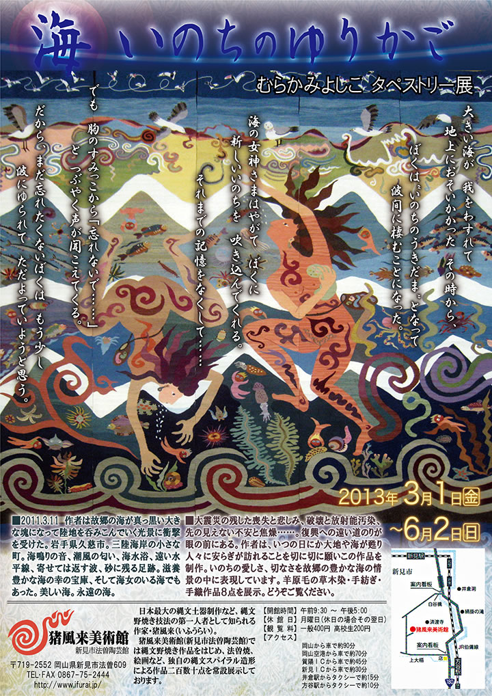
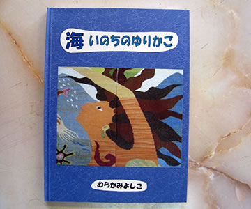

|  |
| 【『海・いのちのゆりかご』チラシ】 →PDF版を開く |
大きい海が 我をわすれて
地上におそいかかった その時から、
ぼくは“いのちのうきだま”となって
波間に棲むことになった。
海の女神さまはやがて ぼくに
新しいいのちを 吹き込んでくれる。
それまでの記憶をなくして……
でも 胸のすみっこから「忘れないで……」
と つぶやく声が聞こえてくる。
だから、まだ忘れたくないぼくは もう少し
波にゆられて ただよっていようと思う。
=∴=∵=∴=∵=∴=∵=∴=∵=∴=∵=∴=∵=∴=∵=∴=∵=∴=∵=∴=∵=∴=∵=∴=∵=∴=∵=∴=
2011.3.11 作者は故郷の海が真っ黒い大きな塊になって陸地を呑みこんでいく光景に衝撃を受けた。
岩手県久慈市。
三陸海岸の小さな町。
海鳴りの音、潮風の匂い、海水浴、遠い水平線、寄せては返す波、砂に残る足跡。
滋養豊かな海の幸の宝庫、そして海女のいる海でもあった。
美しい海。永遠の海。
大震災の残した喪失と悲しみ、破壊と放射能汚染、先の見えない不安と焦燥……。
復興への遠い道のりが眼の前にある。
作者は、いつの日にか大地や海が甦り人々に安らぎが訪れることを切に切に願いこの作品を制作。
いのちの愛しさ、切なさを故郷の豊かな海の情景の中に表現しています。
羊原毛の草木染・手紡ぎ・手織作品８点を展示。
|  |
|
波にゆられて海に棲むことになったいのちの“うきだま”のおはなしを絵本にしました。 タペストリーの絵柄をさし絵にした、優しいふんいきの手作り絵本です。 |